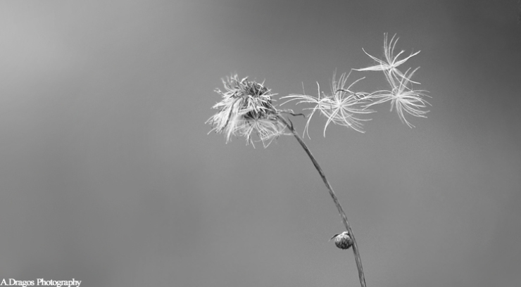
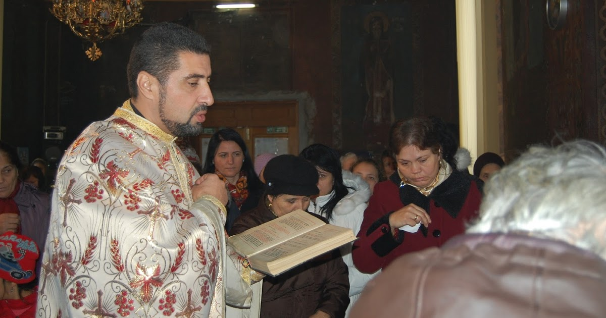

Photo gallery
2020.09.24 10:02








- Vremea curentă Răstolţu Deşert, Sălaj, România | AccuWeather
Download-uri Poze : om, natură, pădure, siluetă, Munte, deşert, umbră, întuneric, negru, artă, american, fundal, Curcan, hd, cowboy turci 2448x2448,1069612 - Soarele şi luna - Povesti Nemuritoare
Soarele reuşise să îi ardă coroana. Cu toate acestea, copacul continua să supravieţuiască în deşert. Într-o zi un şoim trecea în zbor deasupra deşertului. Pasărea a zărit copacul şi aşa a venit şi s-a aşezat pe ramurile lui. Şoimul s-a uitat împrejur şi îi spune copacului. - Soare în deşert | Vectori din domeniul public
Mirajul in deşert În deşert, soarele poate atinge temperaturi foarte ridicate. El usucă foarte mult aerul din imediata sa apropiere şi îşi schimba indicele de refracţie. Avem deci un indice de refracţie variabil ce are loc deasupra solului şi refracţia se produce. - Localitatea Dăbuleni devine prima zonă de deşert din...
Numai soarele pârjoli tor al deşertului poate arde şi se afirmă că acesta prevesteşte durere şi sfârşitul tuturor lucrurilor. Dacă, în vis, apusul soarelui este extrem de frumos, colorat în roşu-sângeriu, puteţi spera la o bătrâneţe frumoasă (vezi, de asemenea, „aur", „lună", „deşert"). - Soarele în citate, maxime, aforisme - diane.ro
Soarele şi luna …baladă populară culeasă de Gh. Dem. Teodorescu. Foaie de cicoare, În prunduţ de mare Iată că-mi răsare Puternicul Soare. Dar el nu-mi răsare, Ci va să se-nsoare; Că mi-a tot umblat Lumea-n lung şi-n lat, - Copacul din deşert | AniDeȘcoală.ro
Oraşul e acum deşert sărăcăcios Iar soarele dispare ros de vină. În dansul şui al torţei dezlânate, Întreg Egiptul se animă în pereţi. Sub mâini de sclavi cad spicele înalte În cântul-rugă îngânat de cântăreţi Şi ziduri grele se despincă-n văl de fum Stânci risipite din nisipuri se adună, Se rânduiesc palate ... - Semnificatia visului - SOARE
asfalt, road, cerul, peisaj, transport, turism, cu maşina, copac, semn, soarele Descarcă gratuit Original (2526 × 1620 709.4 KB JPG) Mediu (900 × 577 233.4 KB JPG) - deşert | SERTARUL CU GANDURI
Ne-am ”adâncit” către deşert. Soarele dimineţii era blând şi făcea ca nisipul să strălucească cu fiecare fir. De aproape pare mai roşiatic. În circa 50 de minute eram deja la hotel în Ras Al Khaimah. Maşina care ne-a transferat a fost dotată cu scaun de maşină potrivit vârstei copilului (a se menţiona în rezervare în ... - Emiratul Ras al Khaimah – cum a fost în vacanţă cu un ...
„Soarele luminează toate marginile lumii. Psaltirea luminează toate simţirile inimii, toate cugetele sufletului şi toate mişcările minţii, căci omul este un microcosmos. ... al iubirii de stăpânire şi al grăirii în deşert, într-un cuvânt să curăţăm inima noastră de neiertare. Să scoatem din inima noastră neiertarea şi ... - Muntele Sinai: o nestemată în deşert — Watchtower ...
Soarele este o stea G2 obişnuită, una dintre cele mai mult de 100 miliardede stele din galaxia noastră. diametru: 1,390,000 km. masa: 1.989e30 kg temperatura: 5800 K (suprafaţă) 15,600,000 K (miez) Soarele este de departe cel mai mare corp din Sistemul Solar. Conţine mai mult de 99.8% din masa totală a Sistemului Solar. (Jupitero mare…